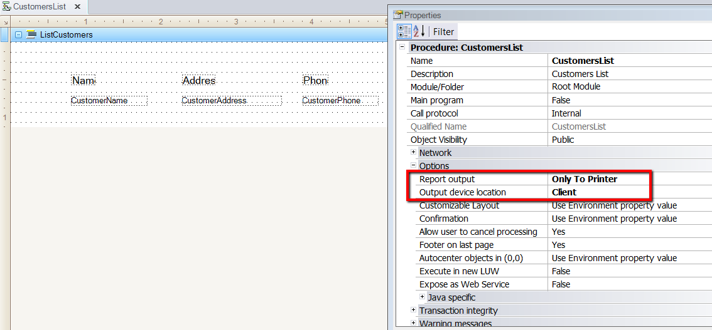
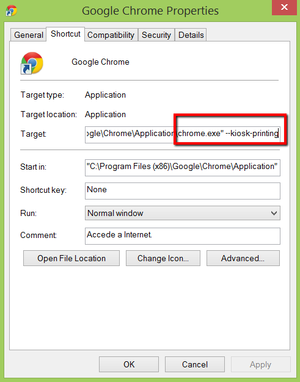
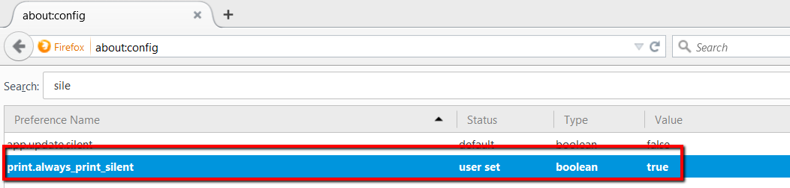

ScenarioThe scenario covered here is that of a web application where text reports are generated and will be printed on the client machine (where the browser runs). The solution is independent of the platform, the server or client machines. ConfigurationThis configuration is necessary for GeneXus X Evolution 2 and GeneXus 15. Edit (or create the file if it does not exist) the config.gx file in the root of the KB, and add the following: AvoidPrintingApplet=Y ExampleConsider the following text report, whose properties are shown below:
Besides, it hasn't got the Printer rule.  Once the report is created, it can be called from any web panel. Silent PrintingThe Show printer dialog on reports property is ignored for this implementation. If you want to avoid the printer dialog, you can do some configuration in the browser. When using Chrome, you need to add the following parameters to execute it: --kiosk-printing  When using FireFox,
 In IE there are similar settings. Note that the reports that have a printer rule in the KB will be run as usual, using the print applet. See Printing text reports using the client’s printer and changing the printer settings.
|
| Backlinks |
| Web printing on client printer (without an applet) |